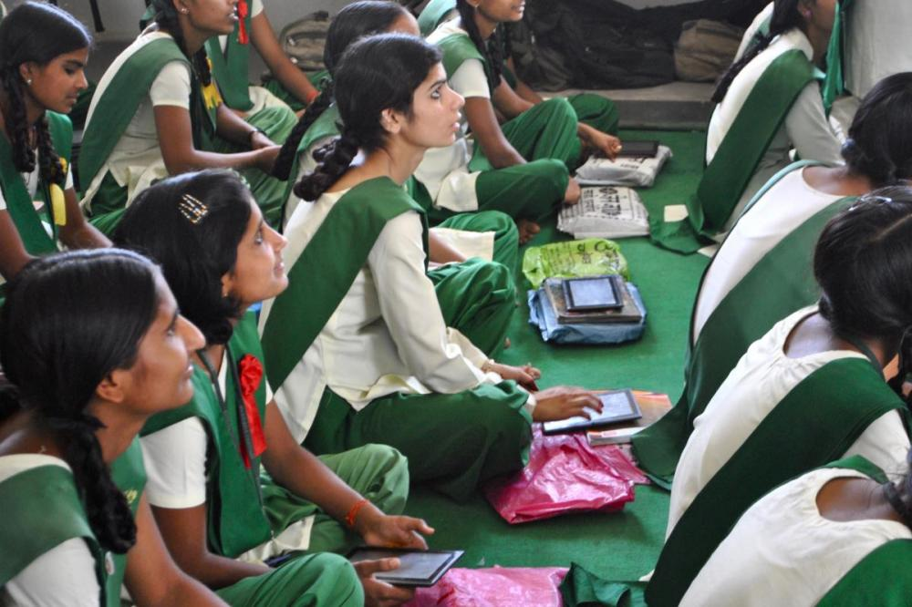

Co-authored with Dr. Jahnavi Phalkey.
This paper, co-authored by Dr. Jahnavi Phalkey, King’s College London, and I, was published in History and Technology, on 5 February, 2016. It can be accessed from the journal website (behind pay wall), and the pre-publication version is available from SSRN.
Abstract
We explore here public and private initiatives in technological solutions for educating the poor and the disadvantaged in India since the second half of the twentieth century. Specifically, we document Ministry of Human Resource Development’s project to develop an affordable tablet computer, named ‘Aakash,’ as a personal access device for digital courses and online learning materials. We approach this case study in relation to several educational technologies that preceded it, and with a wider interest in mapping a contemporary transition from satellite-based mass education to Internet-based mass education. We argue that this process cannot be easily seen as a transition from unilateral broadcasting to more democratic multi-casting model of communication and learning. Specifically, we study the manufacturing process of Aakash and the public debates around it, to comment on the nature of state power in India, as revealed in its attempts to imagine and develop a digital personal device to deliver mass education.
Blog Post
This blog post containing excerpts from the paper was published by the South Asia @ LSE Blog, on February 12, 2016.

Students at Pardada Pardadi Education Society in Anupshahr, Uttar Pradesh, use the Aakash tablet in class as part of a pilot project introducing the low-cost computer into rural schools. Photograph by Sonali Campion, April 09, 2013.
In 2010, the Ministry of Human Resource Development (MHRD) of the Government of India launched a set of prototype devices of an affordable tablet computer, the development and production of which were to be supported by the Ministry as part of its larger ICTs for education project. This device later came to be known as the “Aakash” tablet, and the project went through several iterations, between 2010 and 2014, of not only technological re-designs, but also institutional arrangements to design, develop, manufacture, test, and procure the devices.
Technological Solutions for Mass Education
Our exploration of technological solutions for mass education in India has taken us through a not-so-linear history of projects that have informed the imagination and making of the Aakash project. This include the Satellite Instructional Television Experiment, or SITE (1975); University Grants Commission-led Countrywide Classroom project (1984 -); the Simputer, the first hand-held device developed in India (1998); the Hole in the Wall project developed and led by Sugata Mitra (1999); the Government of India-led EDUSAT (2004); National Programme on Technology Enhanced Learning (2003); and finally, a national online education portal named Sakshat (2006). The Satellite Instructional Television Experiment itself terminated rather quickly, but it led to several versions of television based instruction programmes, most notably aimed at higher secondary and university students. Instruction in the broadcast-format continues to date, even after the arrival of the internet and the fact it has become the preferred medium for the Indian state. The television has not been replaced, but certainly shadowed by a variety of internet access and computing devices.
Aakash, a “Low Cost Access-Cum-Computing Device”
An early official description of the then-nameless tablet as a “low cost access-cum-computing device” is noteworthy [1]. It is difficult to imagine a contemporary computing device that does not also function as an access device (say, to the internet). Where does the need for calling it an “access-cum-computing” device come from? It comes, perhaps, from the hierarchy of priority – the device is primarily an access device, and secondarily can perform the function of a general-purpose computer. An archaeological reading of the assumptions of learning processes embodied in this device reveals an earlier layer of thinking – that of broadcasting educational programmes to television sets via satellite connection. Labelling it as “access-cum-computing” frames the object as being shaped by the residue of the Indian state’s education technological experiences of the past, including that of the SITE initiative.
“[The] Aakash tablet was my dream but it was not fulfilled”
Throughout the short history of the Aakash device, the verdict of “failed innovation” figures prominently – from the early failure of “Sakshat” [2], to allegations of the Chinese origin of the Aakash device [3], to manufacturing troubles and under-production of the device [4], to criticisms of the tablet’s built quality and computing capacity [5], to mistrust and failed collaborations between parties involved in its production [6], and intra-governmental criticisms of the implementation process [7]. Moreover, there remained a continuous tension within the government itself regarding the necessity of the project, especially fuelled by (and fuelling) the image of the project as being driven by the dreams of a specific minister [8].
To simply describe the Aakash project’s failure as one due to the unbearable heaviness of functions ranging from the technical to the symbolic and political is to fall short of a full explanation. Alongside that narrative of failure, it is critical to foreground the quiet success of the project in establishing the tablet computer as a near-essential and familiarised everyday object for access to educational material. There is an alarming accuracy in the MHRD claim that the Aakash project established a sub $100 tablet market in India – it did, even if it was not for the device they wanted to promote [9].
The Device is the Desire
We observe that the Aakash project, as well as the ones preceding it, have been driven primarily by a desire to scale up the provision of education. The initiatives towards building delivery infrastructures for such mass-scale provision of education has almost always been accompanied by a larger desire for developing capabilities in space exploration, communication, and computing – the key technologies of twentieth century geopolitics. Our study of the manufacturing of the Aakash tablet, and its surrounding discourses, foreground the technological imagination of the state after liberalisation in India (1991), and its unique arrangements and efforts to create domestic capability of technological innovation in a context of globalised production and communication networks. We see our role as one of recovering the work of technology in the history of education as understood through the interactions between the state, academia, and industry.
Archival Research in (Increasingly) Digital India
Documenting the project has been an interesting historical exercise. We have been attentive to documents disappearing from their online locations. One remarkable possibility for archival research opened up by the internet is the (limited, and often uncertain) ability to access materials that are not presently available on a website, but were part of it in the past. This possibility allowed us to access a few crucial government documents that are not directly available on the official websites any more. We have also been attentive to the reiterations and revisions that do not merely overtake or shadow earlier documents. They sometimes erase earlier documents altogether as digital revisions. We do not have access to personal correspondence or internal institutional correspondence relating to the project. We are, however, skeptical of that happening as no protocols for the archiving of digital correspondence is yet in place with the Government of India. Doing recent history of India is becoming an ever more difficult exercise that historians must urgently attend to, if we are to make the present ready to have its own past in the future.
References
[1] Ministry of Human Resource Development, Government of India. “The History of Aakash Low Cost Access cum Computing Device.” Sakshat. October 05, 2011. http://archive.sakshat.ac.in/pdf/Final_Note_Aakash.pdf.
[2] Mukherjee, Arindam. “Bonsai Netbooks.” Outlook. February 16, 2009. http://www.outlookindia.com/article/Bonsai-Netbooks/239719.
[3] Raina, Pamposh, and Mia Li. “India’s ‘Aakash,’ Now Made in China.” The New York Times. November 26, 2012. http://india.blogs.nytimes.com/2012/11/26/india%E2%80%99s-super-cheap-tablet-now-made-in-china/.
[4] Nanda, Prashant K., and Surabhi Agarwal. “Government Close to Giving Up on Aakash Project.” Mint. March 22, 2013. http://www.livemint.com/Politics/fmEi8gsOSFgOzSTFfLsw6J/Govt-almost-gives-up-on-Aakash-says-no-point-in-hardware-ob.html.
[5] Chopra, Ritika. “Kapil Sibal’s Cheap Aakash Proves to be a Dud.” Mail Today. January 08, 2012. http://indiatoday.intoday.in/story/kapil-sibal-cheapest-tablet-of-world-aakash-failure/1/167730.html.
[6] Julka, Harsimran. “14 Lakh Aakash Tablets Booked in 14 Days.” The Economic Times. January 03, 2012. http://economictimes.indiatimes.com/tech/hardware/14-lakh-aakash-tablets-booked-in-14-days/articleshow/11345695.cms. Parthasarathi, Ashok. “Cloudy Outlook for Aakash.” The Hindu. May 21, 2012 (Updated: May 22, 2012). http://www.thehindu.com/opinion/op-ed/article3439629.ece.
[7] Comptroller and Auditor General of India, Government of India. Report No. 19 of 2013 - Union Government (Civil) - Report of the Comptroller and Auditor General of India on Compliance Audit Observations. Government of India. 2013. http://www.cag.gov.in/content/report-no-19-2013-compliance-audit-observations-union-governmentcivil.
[8] At an event in late 2013, Kapil Sibal admitted, “[the] Aakash tablet was my dream but it was not fulfilled, I tried hard…” Quoted in Press Trust of India. “Kapil Sibal: Aakash Tablet is My Unfulfilled Dream.” Financial Express. December 24, 2013. http://www.financialexpress.com/news/kapil-sibal-aakash-tablet-is-my-unfulfilled-dream/1211284/0 .
[9] See [1].